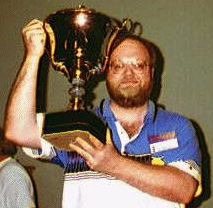

|
Pitt Crandlemire
The
|
First of all, I'd never been to a gaming convention but I had been to a couple of science fiction and Star Trek conventions when I was in college. My recollection was that many of the attendees were...umm, let's be charitable and say "strange." (Of course, it may have been that I was the strange one but, as my perspective is not even remotely objective and as I was not dressed in any unusual costumes, and I actually bathed on occasion, I prefer to think it was them.)
Second, I'd never before met anyone face-to-face who I had first come to know via e-mail. I was a bit nervous about doing so because, though I really enjoyed my correspondence with the other PBEM Dippers who were going to be there, I wasn't sure how that would come across in person. Would they live up to my expectations? Would I live up to theirs?
Finally, I was concerned that I might embarrass myself in the Diplomacy tournament. I learned how to play Dip when I was in college, over 15 years ago. I played two or three face-to-face games there, then I played a couple more over the next two years when I was in the service (same old story -- never enough people to play). I was never aware of the PBM hobby, so, prior to discovering PBEM Diplomacy in 1994, I had not played any more at all since 1982, and I had never played another FtF game. I knew this was the World Championship Tournament and I expected that the best players would be there. Frankly, I didn't want to be humiliated. More than likely, I would have chickened out and decided not to attend but I didn't get the chance. My wife (who knows how much I love to play and compete and is totally supportive) purchased non-refundable plane tickets to the Con, forcing my hand (and those vicious rumors that she just wanted to get me out of the house are completely untrue).
Manus and I then went to lunch and got our first chance to get to know each other except via e-mail. It was quickly apparent that all my earlier reservations were unfounded. Not only was Manus as intelligent and witty in person as he was via e-mail, he was also a regular guy, not at all like the convention-goers I remembered from my misspent youth. I found this to also be true with the other PBEM Dippers I met, Simon Szykman and Jamie McQuinn. One advantage of meeting in person was that it was easier and more natural to discuss non-Dip subjects and we discovered that we also had a lot of other interests in common. We quickly felt very comfortable and I think we were all glad that we had the opportunity to meet in person (at least I did and they were too kind to say otherwise if they didn't feel the same way).
Over lunch, Manus told me about the Colonial Diplomacy Tournament scheduled for that evening. I had missed it in the Con schedule but we both signed up for it. I had never played Colonial Dip before, though I had been observing Andy Schwarz's test game on the USIN judge. The map is basically everything east of the standard map as far as Japan and south to Indonesia. The time period is the late 1800's, during the last gasp of European colonial imperialism. There are also a few variant rules; the only significant one is the Trans-Siberian Railroad which allows Russia to move an army east-west across the entire expanse of Russia.
Manus and I ended up on different boards (there were a total of four, I think). I was playing Holland, which starts in Indonesia, and Manus was playing France, which starts in Southeast Asia. Dan Mathias was GM'ing (he, Bruce Reiff, and Larry Peery were the tournament organizers, and Dan GM'ed all games with some assistance from Bruce). I didn't get an opportunity to observe any of the other games because mine, establishing a trend for the tournament, lasted longer than any of the others.
As this was my first Colonial game, I don't feel qualified to offer an in-depth analysis but I will hazard a few first impressions:
Manus' game also ended in a three-way draw (which was the smallest draw, there were no solos) and he won top country honors as France. So, the only two PBEM Dippers in the competition managed to both come out on top playing their respective countries. We both finished up at about 2:00 a.m. and crashed, pending the start of the main event the next day.
We proceeded to the Dip tourney, where we hooked up with Jamie (he'd stopped by during the TP game and wisely elected not to share in my humiliation). I was amazed at the number of players that showed up for the tournament. There were 13 full boards that first night. The championship format consisted of three rounds, play in at least two, take your best two scores. Scoring was based on a sliding scale where solos earned the most points, two-ways somewhat less, three-ways significantly less, four-ways a lot less, and so on. SC totals also earned points, primarily as tie-breakers, since the tourney rules allowed concession votes as well as draw votes and, thus, a player could get a solo without actually having 18 SC's.
Aside from Manus, Simon, and Jamie, I knew nobody else at the tourney. None of us ended up on the same board in the first round. (For the record, let me note here that I'm not very good at remembering names and, since I never expected to need to know them, I don't recall the names of most of the folks I played with but I'll do the best I can.) I was playing Germany. Other players of note in the game were Al Ray as France (who ultimately won Best Russia for a different game), Greg Stewart as Italy (who ultimately won Best Turkey in another game), and Jim Yerkey as Austria (who ultimately won the Golden Blade for actions in this and another game).
The game started off fairly conservatively but it quickly became apparent that Italy and Austria had a very strong alliance. With a bit of help from Russia, they effectively eliminated Turkey in just a few years (he still had a lone fleet wandering about the Med but his homeland was lost). I developed a moderately solid alliance with France and a shaky one with England. England was played by a very inexperienced, young player and, as a result of that (no mercy, right?) and my concerns about his intentions, France and I stabbed him early. We were making good headway until France semi-stabbed me at Italy's urging. Even more unfortunately for me, Russia, after pacifying Turkey, decided that Germany would make a good second target. Fortunately, Italy stabbed France on the next turn, so France backed off (though he continued to be a waffling, lukewarm ally for most of the rest of the game; mostly because he had trouble believing that I could really forgive his abortive stab). This allowed me to mount a defense against the Russian attack and I was even able to get England to join me in this with his last unit. However, England's inexperience came home to haunt him when he supported Russia in dislodging my Fleet in NWG, even though this forced me to retreat the fleet to EDI, England's last SC, thus eliminating him from the game.
At that point, Spring 1905, I was down to six SC's and Russia, with ten SC's was looming. Things did not look very good. I was about to be annihilated by Russia with help from Austria. France was under strong pressure from Italy and Austria and was no help to me. Then, for reasons that still confound me but for which I am eternally grateful, Austria decided to stab both his allies at once. He gained a quick five SC's but he was never in position to truly profit from it. In fact, he never got to build all five of those units before losing some of the SC's. The net effect was that Russia chose to disband units in the north which had been threatening me in order to counter-attack Austria. At the same time, Italy pulled back, giving France some breathing room and an avenue for expansion in the south.
I chose to play coy for a year and, instead of attacking Russia, assisted him in his counter-attack on Austria. This generated such a degree of trust on his part that he moved all of his remaining northern units south to bulk up his anti-Austrian campaign. Of course, I couldn't let this golden opportunity go by and I stabbed him the following year, taking three SC's. Interestingly enough, he wasn't really unhappy about it. He figured that he deserved it for his earlier unprovoked attacks on me and his remaining enmity was reserved for Austria. Russia believed that he could have won or shared in a draw if Austria hadn't made what he believed to be a stupid stab. All he asked of me was that I help eliminate Austria or, at least, not let him share in a draw. I, of course, agreed, which gained me an unwavering Russian ally for the remainder of the game (even when I took more of his SC's).
Of course, I then immediately went to Austria and explained the situation to him, advising him that I would be willing to share a draw with him but that it would mean that we would have to eliminate Russia first since Russia would veto any draw vote which included Austria. This allowed me to continue to keep Austria focused on attacking Russia rather than trying for a rapprochement; it also allowed me to vote against any draw proposals (all votes were secret) and blame Russia for the failure of the vote. My continued nibbling away at Russian SC's reinforced my diplomatic position with Austria and allowed me to get into position to prevent him from taking any of the remaining Russian SC's.
All the while this was happening, France was making slow progress against Italy and I was giving him constant reassurance that my ultimate goal was a GF two-way or, at worst, a GFA three-way. He continued to be wary for several years but, ultimately, he needed all of his units in the south and I had been such a staunch ally that he felt that he could trust me. Of course, once I saw the opportunity to stab him for real gain with no chance of reprisals, I took it. Prior to this opportunity, I was looking for the solo but I didn't think it was achievable. Ultimately, I won a solo victory with 19 SC's in 1912.
Because of the significant changes of fortune throughout the game, it took 11 hours to play. We had started at 6:30 p.m. on Friday night; we ended at 5:30 a.m. on Saturday morning. Normally, that would be no problem. I'd just crash for awhile. However, the second round of the tourney was scheduled for 8:30 a.m. Saturday morning, only three hours away! I wasn't really tired, just elated. It was at this point that Manus, my good friend who had stayed through the whole thing hours after his game finished, first suggested that I might have a chance at winning the championship. I pooh-poohed the idea, mostly because I didn't really think I had a chance but, if I did, I wanted to maintain my competitive edge and not assume anything. Since we hadn't eaten all night, we grabbed a quick bite (the Columbus Convention Center is great -- the food court was open 24 hours a day during the Con) and then headed to our respective hotels for a brief nap.
I drew England and immediately established a strong alliance with Germany. France made this easy because he came on very strong diplomatically, not only urging alliance but almost mandating certain actions. Both Germany and I were uncomfortable with this and we sought each other out. Early on, we attacked France. Unfortunately for us, Edi's reputation was well-deserved and he managed to successfully stonewall us. This was not a significant problem, though, because Austria and Italy were busy jumping all over Turkey and Russia was playing the "sit and wait to be attacked" game, though he was engaging in mutual animosity with Austria over the fate of GAL. Eventually, the pressure on Turkey became too much and he stabbed Russia. He justified it by saying that Russia's failure to actively come to his aid was tantamount to allying with Austria and Italy and offered to immediately pull back if only Russia would help him. This novel approach failed to move Russia, who turned out to be the kind of player who, almost insanely, replies to an attack with an all-out counter-attack and never quits, no matter what.
I was all for this, of course, as it allowed me to continue to try to outfox France. I was singularly unsuccessful, however, and ultimately, France was able to convince Italy to come to his aid. This forced me to find another SC so I could build another fleet and shut down a French move into MAO. Russia had vacated STP some time previously and I just happened to have a fleet sitting in NOR, with predictable results. This allowed me to stop the French/Italian threat (to me, anyway) but it had the unfortunate side-effect of directing all of Russia's fury my way, even when I explained my reasons for taking the SC and demonstrated that the fleet in STP was no further threat to him (my explanations didn't work any better than Turkey's!). I became the target of his all-out assault and Turkey was allowed to live.
At this same time, Austria moved to attack Germany. If Russia had helped him, it would have been a quick slide into oblivion for Germany but that didn't happen. However, Germany's necessary defense allowed France out of his box. Then, things got really complicated (it's great fun to play with really good players because anything and everything can change at any time). Just as France and Austria were about to do serious harm to Germany, Italy stabbed France and Austria, grabbing three SC's. Then, Austria jumped on board with Turkey and they began to pound on Italy. I chose that moment to give my staunch but uninspired German ally the boot and grabbed two SC's from him. I also managed to make up with France, who also grabbed a German SC. France headed south and I continued to fend off Russia, who was slowly making my life miserable. Then, Austria and Turkey decided to sneak a quick SC or two from Russia and, all of a sudden, I was off the top of the hit list. Russia was forced to defend against these attacks and I promised not only not to attack him but to actively assist him as repayment for my earlier, "foolish" stab. I scrupulously followed through on this commitment, including helping him take some German SC's to cover his losses in the south However, because of Austria's and Turkey's skill, this alone was not enough. I also had to move units into PRU, LVN, BAL, and STP to support Russian units. Further, he had to vacate Scandinavian SC's in order to get the units south and depend on my promise not to take them.
All this time, France was loading up on Italy, who was also being attacked by Austria and Turkey, though not in coordination with France. Eventually, it became apparent that AT could make no headway against Russia so long as I continued to support him and that Italy was going to be eliminated one way or the other since he was facing three enemies with no allies. At that point, I decided that the best possible result for this game was a three-way draw. In order to hasten it (and ensure that I was part of it) I stabbed Russia (taking three SC's). I then invited Turkey to take two of the remaining Russian SC's, with France getting the other. Russia (who had previously, in my opinion, voted against several draw proposals) was then eliminated and I called for an EFT draw, which passed. This gave me a 19 SC solo and a 12 SC 3-way for the championship. I seriously considered calling for the draw vote, voting against it, and then stabbing France and trying for the solo. I decided against it because I didn't think I could manage it with the caliber of players I was up against and I was afraid if I tried it and failed, I might end up out of the draw.
Due to the caliber of the players in this game and the numerous stabs, counterstabs, etc, this game took 12 hours to play. We started at 8:30 a.m. and ended at 8:30 p.m. I had played 23 hours of Diplomacy in a 26 hour period. Still, while I was physically fatigued, I was having so much fun and so excited at my relative success, that I wasn't really tired. The only downside to the length of the game was that it prevented me from playing in the Variant Championship, which started at 6:30 p.m. The variant was Gunboat and Simon came in second.
I drew Russia and started out by allying with Turkey and Italy, which, of course, meant lights out for Austria. As it happened, Austria was played by the same player who had played Britain in my Colonial game and, though I truly regretted doing it, I lied to him through my teeth just as bad in this game as I had in that one. He was gone by the end of 1902, which the only ray of sunshine for me in the early game. Leif was very busy demonstrating that his personal reputation was well-deserved and that the Swedish reputation for quick, decisive play was also well-deserved. In spite of his proclamations of friendship and desire for an ER two-way (which both he and I knew that I didn't believe), he orchestrated an amazing EFG opening. France headed due south with everything he had, Germany headed northeast, moving into BAL in spring 1901 and taking DEN with an army instead, and England took NOR with an army and moved into BAR. That left me with the guaranteed loss of SWE in 1902, the possible loss of STP, and a need to defend WAR against Germany. The French pressure on Italy limited his ability to support me. As if that wasn't enough, England talked Turkey into stabbing me in Spring 1902. I was beset on all sides and my only ally was in no position to aid me. I ended 1902 with four SC's, MOS, STP, WAR, and BUD. It looked like I was going to disappear in 1903, losing MOS and STP in the spring, and Leif would have free rein to go for the championship. Though he didn't say so at the time, Manus, who was observing the game, thought I was doomed.
My personal Dip philosophy, however, is that problems do not present obstacles but opportunities. The more serious the problem, the greater the opportunity. I used the fact that it looked as if I was history to my advantage by showing that I was no threat to anybody in my current condition. I used the fact that Leif had engineered the whole thing against him by pointing out that, if he could do that to me, the current leader for the championship, imagine what he could do once I was gone. I used the fact that I had been so quickly cut down to size to indicate that I really wasn't that good a player. I used the fact that, though I was going out, I was going to go hard and that I would use my remaining units to stay alive as long as possible, even if it was only delaying the inevitable.
Do those "facts" sound contradictory? So what? I didn't use all of them on each player. Each was used judiciously with the player who I judged to be most receptive to that particular point of view. The important thing was that they could be true and that each player was disposed to believe that they were based on my subtle and, apparently, sincere arguments. I know it sounds immodest as hell but, though Leif started the battle, I finished it. I managed to convince France and Germany to turn on England, which freed Italy up to help me put it to Turkey. I went from three SC's in 1903 to seven SC's in 1906. England was down to four SC's at that time, with French fleets camped on his doorstep. Turkey had a single SC, which would have fallen the next turn. Italy had ten SC's but, as a precaution, I had surreptitiously convinced Germany and France to move a few units toward him; a move which he later said convinced him that he couldn't manage a solo and influenced him to call for a draw vote.
 Ultimately, the game ended in an EFGIRT six-way draw, which may sound silly but, since only Leif and I were in contention for the championship, all that mattered was the ultimate disposition of the two of us. We had both made it clear that we wouldn't vote for a draw which included the other but not ourselves. By the time we voted for the draw, we had both come to the conclusion that neither of us was going to be able to eliminate the other, nor were we going to let the other get a better draw than we had earlier achieved. The other players knew this and that's why they voted for the draw. I had been very happy with my play in the earlier games but it wasn't until I stopped Leif's drive and engineered my own comeback in this game that I truly believed that I was worthy of the championship. Beating the reigning World Champion, Bruno, in my second round game was nice but I had lots of help since most of the other players knew of him and his skill. By preventing a player of Leif's skill and ability from beating me based solely on my own diplomatic skill, I felt that I had earned any shot at the championship I might have. As it happened, none of the other players who had a shot were able to get the necessary results and my first and second round results were sufficient to win. In addition to the 1996 World Championship, my German solo was good enough for Best Germany, and, at the suggestion of Manus and Simon, I was also awarded a special "Dedicated Diplomat" award for playing as many hours in as short a time as I did.
Obviously, I was fortunate enough to enjoy a great deal of personal success at the Con. However, and I mean this sincerely, it would all have been (almost) as much fun if I got eliminated in 1902 in every game. I had a blast meeting and playing with all the players and, especially, the PBEM'ers. Though there were a few not-so-pleasant characters in the crowd, they were very few and were easily ignored. The vast majority of the gamers (especially the Dippers) were intelligent, mature, interesting, and fun to be with. The games were well-run and the Con was extremely well-organized. I can't strongly enough encourage each of you to try to attend one. If you do, look me up. I'm planning on being at as many as possible.

|
Pitt Crandlemire The Big Dipper (pittc@syncon.com) |
If you wish to e-mail feedback on this article to the author,
click on the letter above. If that does not work, feel free to use the
"Dear DP..." mail interface.